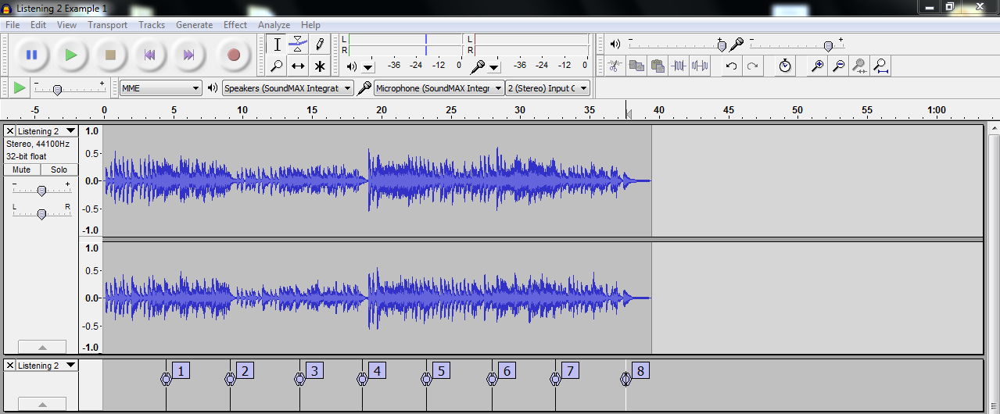
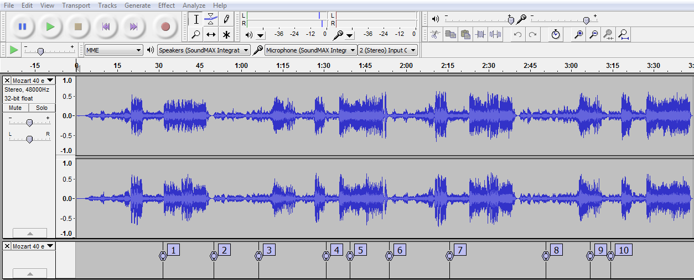
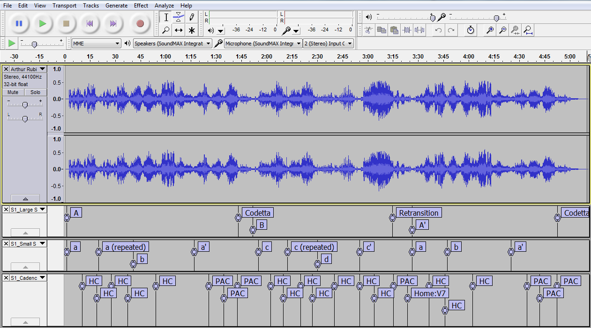
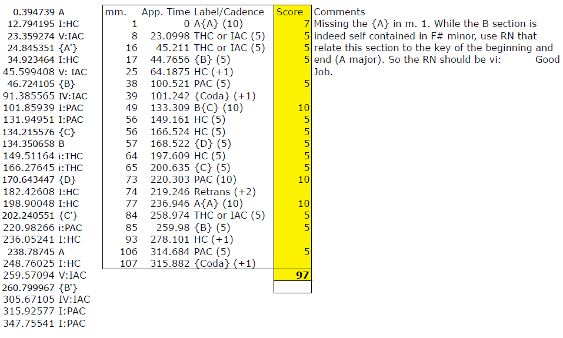
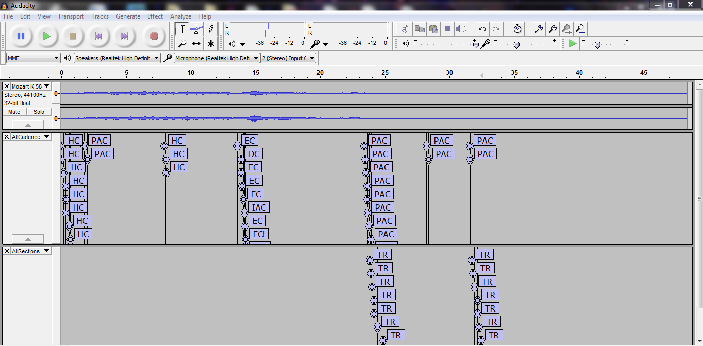

Engaging Students: Essays in Music Pedagogy
Using Audacity to Participate in Active Musical Listening
Crystal Peebles, Northern Arizona University
A common refrain among music theory instructors is that some students don’t actively listen to the compositions assigned as out-of-class activities. Without engaged listening, students often return to class with jumbled, logically inconsistent, or even “unmusical” interpretations. In my experience teaching an upper-level Form and Analysis course, students did not translate the attentive, engaged listening modeled in the classroom to their take-home analysis assignments. For instance, in class I can direct students to attend to certain features while following the score, guide students through the composition without the score using animations or other visual cues, or ask students to physically respond to particular musical events (e.g., raise your hand when you hear a PAC, the return of the opening theme, etc.). Even with directions focusing students’ attention to specific musical details on take-home analysis assignments, students were unable to support their interpretations in class, which in turn stifled class discussion. Of course, teaching students to be engaged listeners is not a new problem (a recent textbook by Matthew Santa, which admirably integrates aural and score analysis, is just one of many resources available), so I developed course materials for an upper-level Form and Analysis course (taught Fall 2012) that used the free and open-source digital editing software Audacity to teach independent, active listening habits.
An instructor could adopt Audacity as an intermediary between aural analysis and score analysis no matter the pedagogical approach, the choice of textbook, or the theoretical perspective on form. (Other software could be used with these activities, for instance, Variations Audio Timeliner, supported by Indiana University.) For this particular class, we used James Mathes’ The Analysis of Musical Form. I chose this text because of its emphasis on goal-directed motions, formal functions, and textural changes, all events that students could easily identify aurally. Further, this text incorporates both aural and written activities, and some of the activities described below are modifications of the aural assignments found in this textbook.
For this course, the main learning objective was for students to be able to communicate and support effectively their analysis of a composition in writing and in speaking while recognizing other possible interpretations. Also, since some of my students still struggled with basic aural skills (some were not able to distinguish aurally between a half and full cadence), I needed to create learning activities that encouraged critical thinking and aural analysis, and remediated deficient aural skills. In order to meet these goals, students completed weekly listening assignments delivered online through our learning management system (LMS); these listening activities prepared the weekly analysis assignments, which integrated aural and score analysis. I incorporated Audacity-based activities in both types of assignments as well as within the classroom.
Over the course of the semester, students completed ten listening assignments designed to assess aural skills and vocabulary comprehension. All the assignments contained questions (multiple choice/answer, matching, or fill-in-the-blank) that referred to unambiguous musical examples. These were graded through the LMS, allowing students to receive immediate feedback. Students had the opportunity to repeat each listening activity up to three times, and their last grade was the score for the assignment. The first few assignments focused on the aural identification of cadences, tonal areas, phrase types, and formal functions. By the end of the semester, students were aurally identifying formal sections and structural events in large forms (sonata and sonata-rondo).
Karpinski 2000 describes two types of activities which would focus listening on form: answering a set of guided questions in prose and creating some sort of a visual representation, like a chart or a diagram, of the composition. Since I wanted students to have immediate feedback and the opportunity to take the assessment multiple times, these types of activities would not be practical. To get around this problem, I used Audacity as a visual scaffold. For most assignments, students downloaded an .mp3 file and .txt file and imported both files into Audacity. (For more detailed information regarding importing and exporting labels in Audacity, refer to the Audacity wiki.) Below is a screenshot of the visual interface in Audacity, the label track from the imported text file that marks important cadential moments, and the corresponding questions from the online assignment (which, in this case, deals with the tonal structure found in the Gavotte from Bach's French Suite No. 5).

Listen to the entire movement several times. Cadences 1 and 2 are exactly the same as which other two cadences?
- 3 and 4
- 5 and 6
- 7 and 8
Which of the following best describes the cadence at point 1?
- I: IAC
- I: HC
- V: IAC
- V: HC
Which of the following best describes the cadence at point 2?
- I: PAC
- ii: PAC
- IV: PAC
- V: PAC
Cadences 5 and 6 are in the same key. What is this key in relation to the home key?
- i
- ii
- iii
- vi
The cadences at points 7 and 8 are best described as:
- I: HC, I: PAC
- IV: PAC, I: PAC
- V: HC, I: IAC
- vi: PAC, I: IAC
While the same types of questions could be easily answered by giving the students a series of time points, as Alegant (2008) describes in his article about analyzing sonata form without a score, the visual representation of the sound wave allowed students to see the larger sections dictated by textural, dynamic, and thematic changes. In anonymous evaluations of this class, a few students reported that watching the cursor move across the sound wave allowed them to pick up on thematic repetitions more quickly and focused their attention on the music. Another advantage to using Audacity for this type of listening assignment is that students can take notes in the label track as the composition unfolds, and repeated listenings can confirm their initial thoughts about the composition.
The example below shows an in-class activity used in preparation for the listening assignment on sonata-form expositions (Mozart, Symphony No. 40, the exposition and its repeat). Using vocabulary from our text, students were asked to describe what part of the sonata exposition was taking place at each numerical label and to support their answer with musical details. The entire activity was completed without the aid of a score; the labels in Audacity allowed us to communicate effectively about sections of the piece. While the crux of this activity focused on aural events that signified formal sections (cadences, thematic and textural changes), this activity also modeled how to support an analysis.

- Middle TR
- Doesn’t follow a cadence, change of texture in middle of phrase, transitional formal function
- Beginning ST
- Lyrical, expository, follows strong cadence marked by silence [medial caesura], thinner texture
- Middle ST, Not CT
- Interpolation in middle of ST, no strong PAC in new key before, doesn’t follow EEC
- Middle CT
- Repetition of first CT phrase, closing function, cadential
- Beginning Codetta
- After strong cadential closure, figuration, definitely closing function
- Beginning PT
- Repeat of the exposition, thematic in nature, expository function
- Beginning TR
- Dependent, sounds the same as the PT, leads into a sequence that modulates
- Middle ST
- Varied repetition of first ST phrase
- End ST, Not CT
- A phrase extension following ST, has closing function, connects ST to CT.
- Beginning CT
- More thematic than 9, uses motives from PT, see 4
In another set of Audacity-based activities students created their own label tracks as a preliminary step to a score analysis. There are two ways to create a marker on a label track in Audacity: you can place a label at the beginning of a selection (where you first positioned the cursor) or at the current playback position. This latter option can be used as the music plays, and so it allows for students to create a real-time analysis, marking specific musical features for future reference. For students who aren’t strong score readers, this allows them to notate an aural analysis, and then annotate the score at their leisure.
In one class activity, I asked students to actively anticipate the arrival of harmonic goals, predicting the onset of the last chord of a cadential pattern by placing a label at the onset of that chord as the composition unfolds. This activity focused listening on cadential arrivals supporting the goal-directed awareness advocated by our textbook. This attentiveness to harmonic goals and cadential articulations is the foundation of recent formal theories taught in the class, notably Hepokoski and Darcy’s (2006) theories on sonata form. Other activities, where students mark motivic repetitions, thematic returns, textural changes, etc., could also allow students to experience theoretical concepts in a tangible way. By turning theoretical concepts into an aural experience, students better retained knowledge and accurately applied these concepts to independent analyses.
I used a similar activity as a part of a few analysis assignments. As a precursor to score-based analysis, students created a label track where they identified and labeled cadences. They then exported the label track as a .txt file, which they submitted electronically prior to class. While students could have used the score to help identify the cadences, the act of labeling the audio file encouraged students to rely on their ears and musical intuitions. The sound was the starting point for analysis, not the score. As a second step, I asked the students to label sections and structural events also within Audacity. The text quoted below shows the preliminary instructions to an early sonata form assignment. I gave the students a list of possible events in a sonata form, and they decided if and when they occur. Labeling within Audacity allowed students to quickly reference sections they marked as similar and compare these sections to confirm their initial analysis. Following this preliminary aural analysis, students annotated their score and supported their analysis using musical details in prose (usually answering a set of questions or writing a two-page mini paper).
Preliminaries:
Listen to Mozart, String Quartet No. 22 (K. 589), movement 2 several times. Both the score and recording are on Bb Learn. As you will hear, this movement is cast in the form of a sonata without development, a common form for slow movements.
Import this sound file into Audacity. Like Assignment 6, create two label tracks: (1) a label track for cadence location and identification (PAC, IAC, HC, THC) and (2) a label track for formal labels. Label the beginning of these following features (if they occur): Exposition, PTA, PT, TR, SOD, MC, STA, ST, EEC, CT/R, Recapitulation, PTA, TR, SOD, crux, MC, STA, ESC, CT/Coda. You will upload both of these .txt files to Bb Learn
From a practical standpoint, having text files from each student for cadences and sections allowed me to evaluate an individual’s analysis prior to class discussion. By importing each student’s analysis into Audacity, I could quickly spot conceptual misunderstandings, and it gave me a clear reference to the student’s analysis, which may be clouded by unclear prose. The images below show an individual student’s assignment on Brahms’ Intermezzo in A Major, Op. 118, No. 2. These files basically took the place of an annotated score (students still annotated the score, but kept it to facilitate class discussion), cutting down on the amount of paper submitted.

Since I was dealing with large class sizes that term (almost 60 students), I opened each text file with Excel, which expedited the grading process, allowing me to return feedback more quickly.

Since the text files are tab-delimited, it is easy to import into Excel, if desired, for assessment. The first two columns are copied from the student’s text file. The information in the middle box is the grading key, and the highlighted box is the student’s score (The time points are approximate. I was very flexible with students’ responses being a couple of seconds early or late. Also, this is a preliminary step to analysis, the accompanying student prose usually cleared up any points of confusion.)
As an added benefit, since I had each student’s text file prior to class, I could combine all the student files into a single label track. To do this, I created a workflow in Automator (OS X) that combined all the submitted text files into a single text file. For Windows users, you will have to use Command Prompt. Alternatively, one can copy and paste the contents from each text file into a new document, but this will take some time. The saved text file then can be imported into Audacity. Students were able to see the multiple interpretations and felt more empowered to speak out and defend their own interpretation during class. One student remarked that she would have never volunteered to share her reading because she felt like it was “wrong”, but when she saw that three other students had the same interpretation, she felt more confident and spoke in class.
The image below shows a brief passage from Mozart, String Quartet No. 22 (K. 589), movement 2.

Following a strong PAC that closes the PT (m. 18), the cadential gesture is repeated twice more, while the upper voice figuration anticipates the figuration in the TR. The label tracks show the all the students' files for cadence placements and new section beginnings. The class was evenly divided between interpreting the material in mm. 18-19 as a cadential extension and the beginning of the TR. This visual display initiated many fruitful conversations in class, not just because students could see what other people were thinking, but because students were more intimately familiar with the composition.
The Audacity-based activities described in this essay can teach students to actively attend while listening to music, to aurally identify structural and thematic cues for formal analysis, and to support an analytic interpretation with musical details. Further application of this program could explore ways in which to connect theoretical ideas with the listening experience. A range of activities could take advantage of label tracks in creating a real-time analysis; activities which allow students to experience theoretical ideas, connecting these ideas with the musical act of active listening. By encouraging student engagement in the preliminary listening experience prior to a score analysis, these activities can foster a deeper understanding of a composition: students are able to support their reading, resulting in fruitful and active class discussions.

This work is copyright 2013 Crystal Peebles and licensed under a Creative Commons Attribution-ShareAlike 3.0 Unported License.